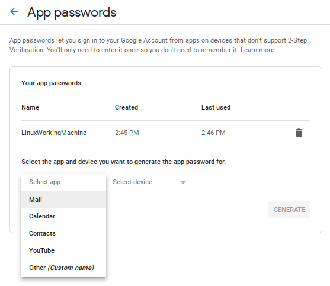
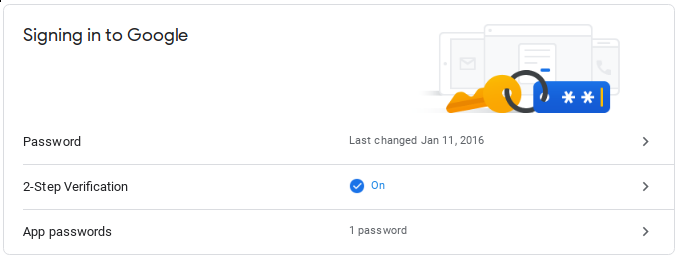
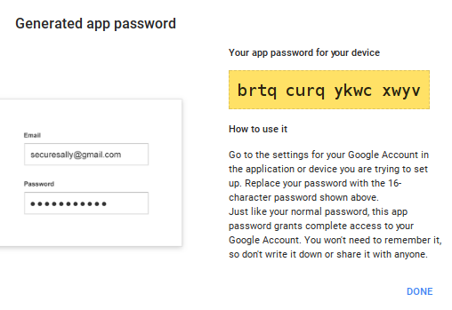

Очистка старой почты в gmail

Раз в пару лет я провожу генеральную уборку в своём почтовом ящике. Так как пользуюсь я gmail аккаунтом, то веб-интерфейс для этого, как выяснилось уже давно, далеко не самое удобное решение. Конечно, у меня уже прописан миллион правил для писем, на основании которых письма сортируются по папкам, но и этого зачастую не хватает. Появляются новые письма, которые не попадают под уже существующие метки и за год таких писем может накопиться скажем, пара миллионов. Более того, есть письма, которые мне нужны в определённой папке какое-то время, например, месяц или два и которые затем можно смело удалить. Так вот, в рамках самого gmail, насколько я понимаю, нет возможности настроить правило с соответствующим функционалом, но есть в принципе несколько методов борьбы с данной проблемой.
Предостережение: Будьте осторожны, сначала поищите письма, заголовок или тело которых включает в себя слова "регистрация", "регистрации", "учётная", "учётные", "доступ" и тому подобные, после чего переместите найденное в отдельную папку - может пригодиться. Если вы всё же удалите что-то важное в результате своих действий, я за это ответственности нести не собираюсь.
Метод первый - "капитанский"
Суть метода заключается в том, чтобы воспользоваться поиском с уточнением времени создания письма. Например, запрос следующего вида найдёт все сообщения, поступившие с адреса vpupkin@mail.ru, возраст которых старше года:
from:vpupkin@mail.ru & older_than:1y
Так же можно использовать поля to, subject, label и тому подобные. Для полей older_than и newer_than можно использовать условия вида 5d (5 дней), 10h (10 часов) и так далее. Условия запроса можно комбинировать, используя операторы OR, AND и скобки. Пример:
from:(vpupkin@mail.ru OR psidorov@gmail.com) older_than:15d
Примеры подобных запросов в принципе легко нагуглить или обратиться к официальной документации. После того, как вы будете видеть перед собой список писем, удовлетворяющих критериям поиска, вы можете выделить чекбоксом все видимые сообщения и если их будет больше, чем возможно отобразить на одной странице, то необходимо будет нажать "Select all conversations that match this search" или "Выбрать всё, что соответствует запросу", после чего можно нажать на пиктограмму корзины для удаления или на пиктограмму ярлыка для создания новой метки. Если писем у вас достаточно много, то процесс может занять не один десяток минут, причём в течение всего этого времени веб интерфейс гугла будет рапортовать о своей занятости и совершать какие-то иные действия над своей почтой вам не удастся. То есть, запросы желательно комбинировать. Но в любом случае, вариант этот назвать оптимальным я не могу.
Вариант второй - скриптинг
Можно реализовать автоматическое удаление с помощью Google Apps. Очевидный плюс данного подхода - старые письма будут удаляться автоматически. Минусы - с этим немного сложнее разобраться неподготовленному пользователю, довольно неудобно для добавления/изменения настроек удаления каждый раз править скрипт, а так же отсутствует гибкость и возможность проверки, что же именно мы можем удалить. Поэтому лучше пользоваться этим способом следующим образом: во-первых, создать фильтр и правило, в соответствии с которыми вся почта, которая будет подлежать удалению, будет помечена определённым тегом (перемещена в отдельную поддиректорию), после чего уже google script будет для всех писем с этой меткой производить их перемещение в корзину, откуда удаляется всё, что имеет возраст более месяца. Статей о том, как создать скрипт для автоматической очистки писем в gmail - масса, поэтому не буду умножать сущности. В качестве примера оставлю ссылку на гитхаб с примером подобного скрипта. Скажу сразу - именно этот скрипт сам не использовал, но использовал множество подобных.
Вариант третий - использование IMAP
Можно подключиться к ящику по IMAP и SMTP. Казалось бы, это самый простой выход - можно подобрать удобный почтовый клиент, позволяющий быстро индексировать, искать, удалять и перемещать письма, но есть пара нюансов.
Раньше я использовал для этой задачи Claws Mail и он меня всем устраивал, особенно наличием огромного количества плагинов, расширяющих его функционал. Но с тем же успехом можно использовать и какой-нибудь ThunderBird. И вот, сегодня, когда я захотел устроить генеральную уборку в своём рабочем почтовом ящике и рассортировать полмиллиона-миллион писем, я вспомнил, что для моего аккаунта включена двухфакторная авторизация, то есть, авторизация с помощью внешнего клиента невозможна. Более того, gmail перешёл на технологию OAuth2 для авторизации и на англоязычных форумах пользователей Claws Mail, да и множества других почтовых клиентов тут и там находились темы о невозможности авторизации в Gmail через IMAP. Оказывается, для таких случаев теперь можно сгенерировать специальный шестнадцатизначный код, который будет использоваться вместо пароля:
An App password is a 16-digit passcode that gives an app or device permission
to access your Google Account. If you use 2-Step-Verification and are seeing a
“password incorrect” error when trying to access your Google Account, an App
password may solve the problem. Most of the time, you’ll only have to enter an
App password once per app or device, so don’t worry about memorizing it.
Для этого нужно зайти в настройки своего аккаунта https://myaccount.google.com/, перейти в раздел Security, далее в блоке "Signing in to Google" перейти по ссылке "App passwords".

Затем выбрать в выпадающем меню "Select app" пункт Mail, в "Select device" выберите нужный пункт или создайте новый, после чего нажмите на кнопку GENERATE.

В результате вы получите шестнадцатизначный код, который вы сможете использовать вместо пароля в почтовом приложении (код на текущем скриншоте неактивен):

Напомню общие настройки почтовых приложений для gmail аккаунта, указанные в документации:
Incoming Mail (IMAP4 protocol) Server imap.gmail.com Requires SSL: Yes Port: 993 Outgoing Mail (SMTP) Server smtp.gmail.com Requires SSL: Yes Requires TLS: Yes (if available) Requires Authentication: Yes Port for SSL: 465 Port for TLS/STARTTLS: 587 Full Name or Display Name: Your name Account Name, User name, or Email address: Your full email address Password: Your Gmail password
Также не забывайте, что для доступа извне нужно, чтобы в настройках аккаунта Gmail была включена возможность доступа по IMAP и, возможно, был включен доступ к небезопасным приложениям.
Теги: админское